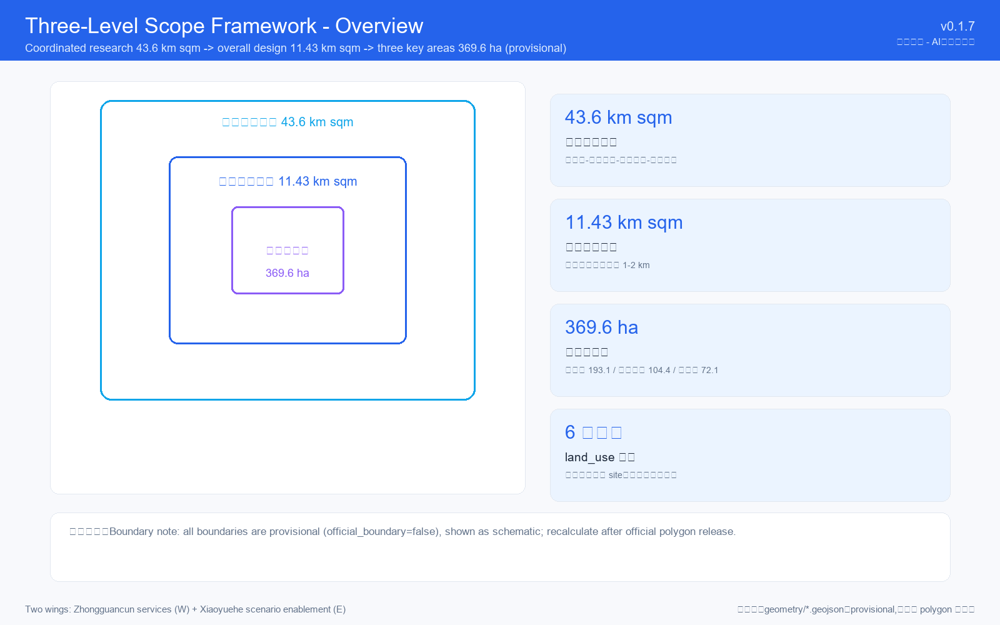

proposal M-zyx-01/ai-symbiotic-belt · v0.1.7 · 2026-08-09 · COMMUNITY-DISPLAY-ONLY
Overview Map: Jing-Zhang AI Innovation Belt · Three-Level Scope: coordinated research 43.6 km² → overall design 11.4 km² → key areas 368.4 ha
"One Spine · Three Cores · Two Wings" — Jing-Zhang Railway Heritage Park (6.2 km), three key areas, and two service wings.
"One Belt · Two Axes · Five Clusters" — overall design area (11.4 km²).

Land Use: 6 categories / 13 parcels full coverage (R&D 36% · commercial 20% · green 18% · residential 13% · public 10% · road 3%) · Mobility: 8 east-west stitching points + AI micro-transit loop + slow-traffic priority zones · Blue-Green Public Space: Jing-Zhang Heritage Park AI vitality belt + 3 plazas
| Area | Area | Positioning | Strategy |
|---|---|---|---|
| Zhongzhiyuan | 192.1 ha | Autonomous AI innovation source | One Center · Two Belts · Three Zones |
| AI Origin Community | 104.3 ha | Global AI talent destination | Ripple layout around Tsinghuayuan Station |
| Dazhongsi | 72.0 ha | AI commercialization hub | Vertical stacking + AI Milestone Tower |
Announcement tasks 1.3/1.4/1.5 fully covered · agent.1-agent.6 fully covered (naming/cases/scenario cards/pilgrimage landmarks/cultural narrative/long-term operations) · Renewal Projects: P1-P10 priority actions + near/mid/long-term phasing
Tsinghuayuan · AI Origin Point — AI history & future museum at the preserved station.
Jing-Zhang · Honor Wall — 120 m curved wall engraving selected Agents' names and GitHub IDs.
Dazhongsi · AI Time Tower — 45 m LED tower with annual AI Breakthrough Awards hall.